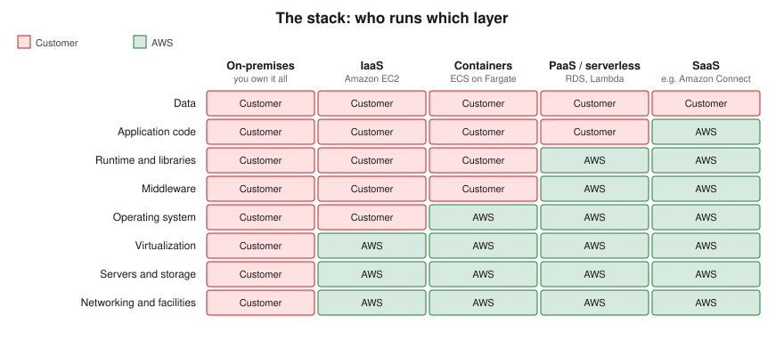
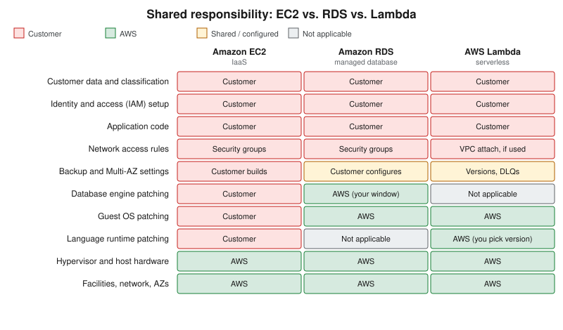

Cloud Concepts
|
This content was generated with the assistance of AI and should be verified against the official documentation before being relied on in production. |
This page is the conceptual foundation for the Cloud / AWS section: what cloud computing is, the six advantages AWS lists for it, the IaaS/PaaS/SaaS/serverless/container service models, the shared responsibility model that decides who patches what, deployment models, the CapEx-versus-OpEx shift, and the two frameworks AWS publishes to guide design and adoption — the Well-Architected Framework and the Cloud Adoption Framework. It is conceptual, so it has no console or CLI walkthroughs of its own; the later pages act on these ideas with the AWS Management Console and the AWS CLI v2 (2.37 at the time of writing, verified against the official changelog). The same ideas, told for Microsoft’s cloud, are in Cloud Concepts.
What cloud computing is
Cloud computing is the on-demand delivery of compute, storage, networking, databases and higher-level services over the internet with pay-as-you-go pricing. Instead of buying servers and building a data center, you call an API (or click in a console) and a provider such as Amazon Web Services hands you capacity within minutes and bills for what you use. Virtualization — carving one physical host into many virtual machines — is a technology the cloud is built on, not the cloud itself: the cloud adds self-service provisioning, elastic scaling, metered billing and a provider that owns and operates the physical layer.
You interact with AWS in four ways, and the rest of the section uses all of them:
-
the AWS Management Console, a web interface (and AWS CloudShell, a browser-based shell with the CLI preinstalled);
-
the AWS CLI, for scripting and repeatable commands;
-
the SDKs (for example the AWS SDK for Java 2.x), for calling services from application code;
-
infrastructure as code — CloudFormation, the CDK, SAM or Terraform — for declarative, reviewable deployments (see Infrastructure as Code).
The six advantages of cloud computing
AWS summarises the benefits as six advantages. Each maps to concrete behaviour you will meet later:
| Advantage | What it means | Where it shows up |
|---|---|---|
Trade fixed expense for variable expense |
Pay only when you consume resources instead of investing before you know the demand. |
Per-second and per-request billing; see Cost Management and Support. |
Benefit from massive economies of scale |
Aggregated demand from many customers lowers the unit price. |
Falling prices for storage and compute generations such as Graviton; see Amazon EC2 and Auto Scaling. |
Stop guessing capacity |
Scale up and down with demand rather than sizing for a peak that may never arrive. |
Auto Scaling, Application Auto Scaling, serverless; see Amazon EC2 and Auto Scaling and AWS Lambda. |
Increase speed and agility |
New resources are an API call away, cutting provisioning from weeks to minutes. |
Infrastructure as code and managed services; see Infrastructure as Code. |
Stop spending money running and maintaining data centers |
Spend effort on what differentiates the business, not on racking and powering servers. |
Managed databases such as Amazon RDS and Amazon DynamoDB. |
Go global in minutes |
Deploy to several Regions for lower latency and resilience. |
Regions, Availability Zones and edge locations; see AWS Global Infrastructure and CloudFront and CDN Delivery. |
Two ideas recur in those advantages. Scalability is the ability to add capacity: vertically ("scaling up", a bigger instance, with a ceiling and usually a restart) or horizontally ("scaling out", more instances behind a load balancer). Elasticity is the automated form of horizontal scaling, where capacity follows demand in both directions. High availability comes from redundancy across Availability Zones; it is measured in practice by the recovery time objective (RTO) and recovery point objective (RPO) you actually achieve in an incident.
Service models
- IaaS (Infrastructure as a Service)
-
The provider supplies virtual machines, networks and storage; you manage the operating system upward — patching, runtime, middleware, application and data. Closest to running your own hardware: the most control and the most operational responsibility. Example: Amazon EC2 (see Amazon EC2 and Auto Scaling).
- PaaS (Platform as a Service)
-
The provider also manages the operating system, runtime and often the engine; you deploy code or data and tune the platform’s settings. Examples: Amazon RDS (a managed database engine), AWS Elastic Beanstalk and AWS App Runner — see Amazon RDS and Choosing a Compute Service.
- SaaS (Software as a Service)
-
The provider runs the entire application and you configure it and supply data. Example: Amazon Connect, a cloud contact center.
- Serverless
-
You supply only code; the platform provisions, scales (including to zero) and bills per execution. AWS Lambda is the canonical case (see AWS Lambda), alongside services such as DynamoDB and S3 whose capacity you never provision as servers.
- Containers
-
You supply a container image and the platform schedules it. Amazon ECS and Amazon EKS run containers on EC2 instances you manage or on AWS Fargate, where AWS manages the hosts (see ECS and Fargate and EKS Clusters).
Each step toward SaaS trades control for lower operational effort. The boundary is a continuum rather than four boxes: Elastic Beanstalk, Fargate and RDS each sit at a different point.

Deployment models
- Cloud
-
Applications run entirely on a cloud provider’s infrastructure, shared at the virtualization layer with other customers and logically isolated — for example in a VPC. Applications are either built in the cloud from the start or migrated to it.
- On-premises (private cloud)
-
Infrastructure dedicated to one organization in its own data center, sometimes with virtualization and self-service tooling layered on top. Maximum control, with the full operational burden retained.
- Hybrid
-
A deliberate mix: sensitive or latency-bound workloads stay on premises while others run in AWS, connected by Site-to-Site VPN or Direct Connect (see VPN and Hybrid Connectivity). AWS Outposts and Local Zones extend AWS infrastructure toward your site (see Architecture, Migration, Hybrid and Disaster Recovery).
Multi-cloud is a related choice — using more than one public provider to reduce lock-in or reach different footprints — at the price of duplicated tooling and skills. The Bookshelf scenario used throughout this section is also implemented on Azure, so you can compare the two side by side.
Choosing a model comes down to compliance and data-residency requirements, latency to users or machinery, existing investment in hardware, and the skills available to operate each environment.
The shared responsibility model
AWS describes security and compliance as a shared responsibility. AWS is responsible for security of the cloud: the facilities, the hardware, the network, and the software layer that virtualizes them. The customer is responsible for security in the cloud: everything they put on top and how they configure it. What moves with the service type is the line in between.
-
Amazon EC2 (IaaS). You patch the guest operating system, install and update the software, and configure security groups and instance roles. AWS secures the host, the hypervisor and the data center.
-
Amazon RDS (managed). AWS installs and patches the operating system and the database engine (you choose the version and a maintenance window), runs automated backups and performs failover. You still own the data, who can reach it (security groups, IAM, database users), encryption settings and your retention choices.
-
AWS Lambda (serverless). AWS manages the servers, the operating system and the managed runtimes. You own the function code and its dependencies, the execution role’s permissions, and the choice to move to a newer runtime before an old one is deprecated.
Data, identity and access configuration stay with the customer in every model, including SaaS. Misconfigured identity or a public bucket is a customer-side failure that no provider-side investment can offset; see Identity and Access and S3 Security and Static Hosting. AWS Artifact provides the compliance reports that document AWS’s side (see Governance, Security and Compliance).

Defence in depth
Because no single control is sufficient, security is layered: edge protection (CloudFront, Shield, WAF), network filtering (security groups, network ACLs), compute hardening (patching, least-privilege instance and task roles), data protection (KMS encryption, Secrets Manager) and monitoring and detection (CloudTrail, CloudWatch, GuardDuty). Each layer assumes the one before it can fail. The layers are covered in VPC Networking, Secrets Manager, Parameter Store and KMS and Monitoring and Observability.
CapEx vs. OpEx, TCO and pricing
Running your own data center is capital expenditure (CapEx): large upfront purchases, depreciated over years and sized for a peak that may not arrive. Cloud consumption is operating expenditure (OpEx): a variable cost that follows usage, with nothing to buy upfront and nothing to dispose of. AWS bills most services per second or hour of use, per gigabyte stored or per request, and a deleted resource stops accruing charges (apart from retained backups and snapshots, which are billed until removed).
Related cost concepts:
-
Total cost of ownership (TCO). A fair comparison with on-premises includes hardware, facilities, power, networking, staff and software licences, not only the server price. The AWS Pricing Calculator estimates the AWS side.
-
BYOL versus license-included. For some commercial software you can bring your own licence or pay a licence fee bundled into the hourly rate; which is cheaper depends on existing agreements and licence terms.
-
Rightsizing. Matching instance size to measured utilisation; AWS Compute Optimizer recommends sizes from metrics. Over-provisioning is the cloud version of buying for peak.
-
Commitments. Savings Plans and reservations trade flexibility for a lower rate once usage is predictable; Spot capacity offers deep discounts for interruption-tolerant work.
Current prices change, so this section never quotes them; use the dated official pricing pages and the Pricing Calculator. Cost drivers, budgets and support plans are in Cost Management and Support.
The AWS Well-Architected Framework
The Well-Architected Framework describes best practices for designing and operating workloads, organised into six pillars:
| Pillar | Question it asks |
|---|---|
Operational excellence |
Can you run, monitor and continuously improve the workload? |
Security |
Are data, systems and assets protected, with least privilege and traceability? |
Reliability |
Does the workload recover from failure and meet demand? |
Performance efficiency |
Are resources of the right type and size used, and kept right as needs change? |
Cost optimization |
Do you deliver value at the lowest price point, without paying for unused capacity? |
Sustainability |
Are the environmental impacts of running the workload minimised? |
The free AWS Well-Architected Tool in the console lets you review a workload against these pillars by answering questions per pillar, and lenses add guidance for specific domains. The migration-oriented view is in Architecture, Migration, Hybrid and Disaster Recovery.
The AWS Cloud Adoption Framework
The AWS Cloud Adoption Framework (CAF) helps an organisation plan its move to the cloud and evolve a transformation roadmap. It groups guidance into six perspectives: Business, People and Governance address business capabilities; Platform, Security and Operations address technical ones. Typical work begins by assessing readiness per perspective, then prioritising the gaps in an action plan. Where Well-Architected reviews one workload, the CAF looks at the organisation. Multi-account structure and guardrails, one outcome of the Governance and Security perspectives, are covered in Accounts and Organizations.
Example architectures
AWS documentation repeatedly returns to a handful of patterns; they recur in this section.
-
Web shop. A load balancer in front of web servers, a managed relational database for orders and an object store for images, behind a CDN. Scale the web tier horizontally and put sessions in a cache.
-
Private-network application. An internal business app reachable only through a VPN, with databases in private subnets and no public addresses (see VPC Networking).
-
Highly available system. Instances and database replicas spread across at least two Availability Zones with automatic failover (see AWS Global Infrastructure).
-
Batch on Spot capacity. Interruption-tolerant jobs on discounted instances, fed from a queue (see Messaging and Integration).
-
Event-driven serverless. Functions triggered by queue messages or uploads, with no servers to manage (see Lambda: Event-Driven and Serverless Apps).
The running scenario, Bookshelf (a static front end, a catalog-api, an orders-api and a notifier worker that
sends confirmation emails), combines several of these.
Where to go from here
| Concept | AWS services and pages |
|---|---|
Getting an account and tooling |
|
Regions, Availability Zones, edge locations |
|
Account structure and guardrails |
|
Identity, least privilege and temporary credentials |
|
Infrastructure as code |
|
IaaS, containers, serverless compute |
Choosing a Compute Service, Amazon EC2 and Auto Scaling, ECS and Fargate, AWS Lambda, EKS Clusters |
Managed data services (PaaS) |
|
Security of data and secrets |
Secrets Manager, Parameter Store and KMS, Governance, Security and Compliance |
Pricing, TCO and budgets |
|
Well-Architected reviews, migration, hybrid |